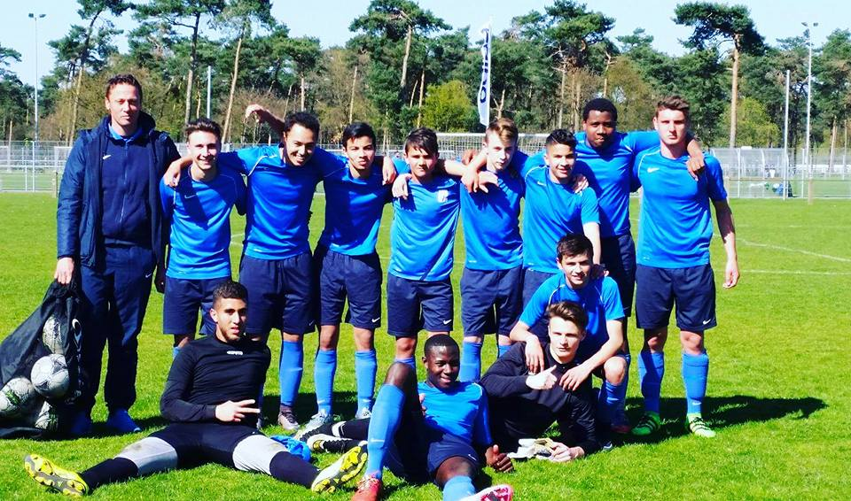
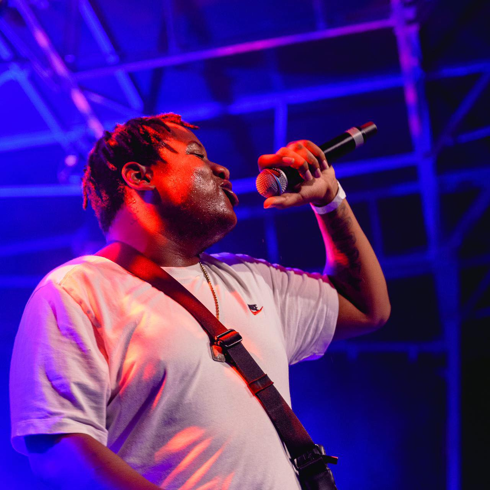
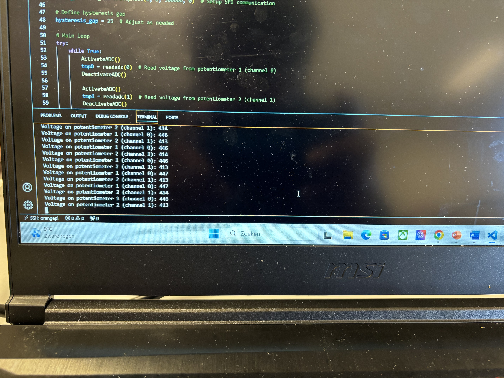

Voetbal is voor mij meer dan alleen een sport — het is een manier om actief te blijven, samen te werken en m'n hoofd leeg te maken. Of het nu een potje met vrienden is of een spontane wedstrijd buiten, het leert me steeds opnieuw hoe belangrijk teamwork, discipline en focus zijn. Diezelfde mentaliteit gebruik ik ook tijdens het programmeren: samen werken aan een doel, strategie bepalen en tot het einde geconcentreerd blijven.

Muziek is mijn creatieve uitlaatklep. Ik vind het heerlijk om met geluiden te experimenteren en eigen tracks te maken die een bepaalde sfeer of emotie overbrengen. Het proces van creëren — van een idee in mijn hoofd tot een volwaardig nummer — lijkt sterk op programmeren: geduld, gevoel voor detail en het vinden van de juiste flow. Muziek helpt me om geïnspireerd te blijven, ook bij mijn technische projecten.

Programmeren is voor mij niet alleen een studie, maar een manier om ideeën tot leven te brengen. Elk project is een uitdaging waarbij ik mijn logische denkvermogen en creativiteit kan combineren. Het moment waarop code werkt zoals ik het voor me zag — dat geeft mij dezelfde voldoening als een doelpunt scoren of een muziekstuk afmaken.